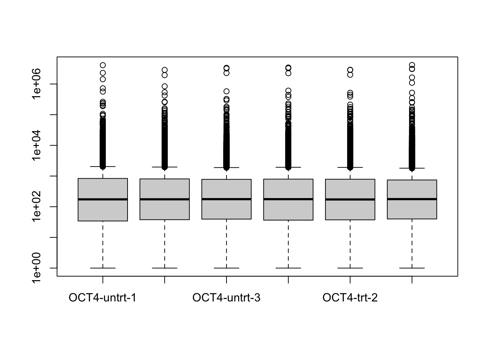
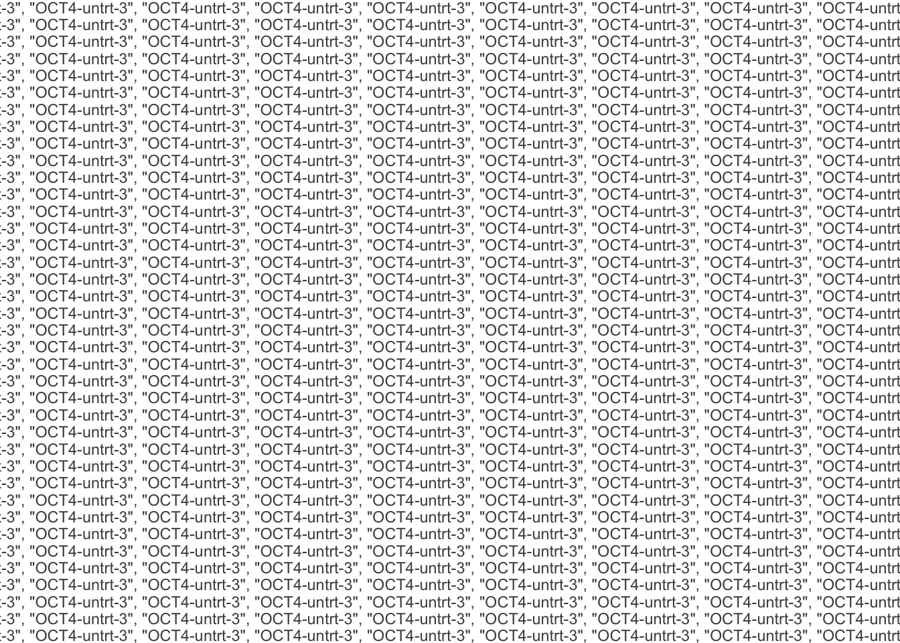
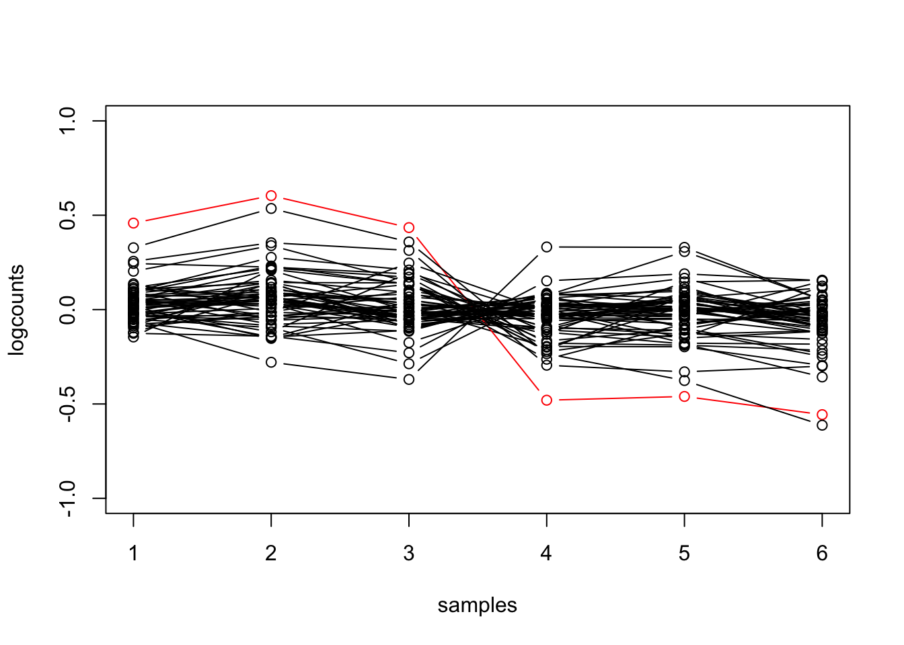

Objective: learn how to make basic EDA plots (plotting scaled counts) of RNA-seq data using tidy-style verbs.
The tidybulk Bioconductor package and associated tidy transcriptomics ecosystem (tidySummarizedExperiment, tidySingleCell, tidyseurat, etc.) provide a bridge between the SummarizedExperiment-style representation of matrix data with attached metadata, to the tidy-style representation of data (one row per observation). For more details on the package, check out the tidybulk website, and the publication: Mangiola et al. (2021).
Here we will briefly examine the difference between tidy manipulation of these matrix-style objects compared to how these objects would be manipulated in other Bioconductor workflows (e.g. DESeq2, edgeR, or limma workflows). As you will see, there are multiple ways to generate the same or similar exploratory plots and analyses. we recommend to consider which is more appropriate to your purpose. For package code, you may prefer to have fewer dependencies, going with core Bioconductor objects and packages. For scripting, the “fluent” and piped style of tidybulk may be preferable, and easier for others to read and modify your code at a future date.
Here we just compare code for some basic tasks, scaling counts and performing DE with DESeq2. However, note that tidybulk has many functionalities implemented, including dimension reduction and visualization (PCA, MDS, tSNE, UMAP), clustering, gene set testing, cell type composition analysis and cell abundance testing, unwanted variation modeling, imputation, etc.
Start by loading this RNA-seq dataset from the following paper: King and Klose (2017) “The pioneer factor OCT4 requires the chromatin remodeller BRG1 to support gene regulatory element function in mouse embryonic stem cells” https://doi.org/10.7554/eLife.22631. The experiment focused on OCT4 as it is a “core pluripotency transcription factor” which “occupies sites that would otherwise be inaccessible and is required to shape the occupancy of additional pluripotency transcription factors”.
In this experiment, transcription in mouse embryonic stem cells (ESC) was compared with and without OCT4. This was done using a conditional mouse ESC line where treatment with a compound leads to loss of OCT4 expression. The experiment also involved the same approach to another transcription factor BRG1, but we focus here on the OCT4 samples.
Read in the count data with tximeta, which automatically imports the information about the gene provenance (which transcripts were used to quantify the gene and isoform abundance). We then summarize the quantification to the gene-level, and add the gene SYMBOL.
For this workflow, we don’t need the inferential replicates (about uncertainty regarding the quantification), so we keep just the counts, abundances (TPM), and gene lengths. We also manipulate the metadata a little bit.
library(SummarizedExperiment)assayNames(gse)assays(gse) <-assays(gse)[1:3]gse$rep <-rep(1:3, 4)colnames(gse) <-paste(gse$line,gse$condition,gse$rep,sep="-")assay(gse, "counts") <-round(assay(gse, "counts")) # for DE consistency# save for easy loading latersave(gse, file="data/oct4_obj.rda")
We will be interested in the gene set from the Gene Ontology project, which describes maintenance of pluripotency. We can extra this from the mouse organism data package with the following three lines of code:
Now we start with tidybulk code, comparing in turn to base R. Loading tidySummarizedExperiment allows us to operate on the gse object using familiar “tidy” verbs, thanks to an abstraction described in the tidySummarizedExperiment documentation. We filter the samples that correspond to the OCT4 experiment, and then modify the sample names. Samples are referred to with the special .sample string, while features are referred to with .feature, so here we create a new variable to plot the samples sample_name.
library(tidySummarizedExperiment)library(dplyr)library(stringr)oct4 <- gse %>%filter(line =="OCT4") %>%mutate(sample_name =select(., .sample) %>%# this is a hack, .sample seems broken with mutatestr_remove("OCT4-") %>%factor(levels =unique(.)),condition = condition %>%factor(c("untrt","trt")))
Warning: `when()` was deprecated in purrr 1.0.0.
ℹ Please use `if` instead.
ℹ The deprecated feature was likely used in the tidySummarizedExperiment
package.
Please report the issue at
<https://github.com/stemangiola/tidySummarizedExperiment/issues>.
Warning: There was 1 warning in `dplyr::mutate()`.
ℹ In argument: `sample_name = select(., .sample) %>% str_remove("OCT4-") %>%
factor(levels = unique(.))`.
Caused by warning in `stri_replace_first_regex()`:
! argument is not an atomic vector; coercing
Warning: There was 1 warning in `dplyr_fn()`.
ℹ In argument: `sample_name = select(., .sample) %>% str_remove("OCT4-") %>%
factor(levels = unique(.))`.
Caused by warning in `stri_replace_first_regex()`:
! argument is not an atomic vector; coercing
Note, the third line in the mutate call uses the unique function to set the levels: the consequence of this is that the sample_name factor will have levels in the order in which they are present in the current character vector and not alphabetical.
tidybulk provides access to many steps in bulk analysis, including filtering and count scaling. For details on what is happening behind the scene, see the help, e.g. ?keep_abundant describes that it makes use of edgeR::filterByExpr.
Warning: The `factor_of_interest` argument of `keep_abundant()` is deprecated as of
tidybulk 2.0.0.
ℹ Please use the `formula_design` argument instead.
ℹ The argument 'factor_of_interest' is deprecated and will be removed in a
future release. Please use the 'design' or 'formula_design' argument instead.
Warning: The `factor_of_interest` argument of `identify_abundant()` is deprecated as of
tidybulk 2.0.0.
ℹ Please use the `formula_design` argument instead.
ℹ The argument 'factor_of_interest' is deprecated and will be removed in a
future release. Please use the 'design' or 'formula_design' argument instead.
ℹ The deprecated feature was likely used in the tidybulk package.
Please report the issue at <https://github.com/stemangiola/tidybulk/issues>.
It is straightforward to pipe the data directly into plots:
using counts and average transcript lengths from tximeta
using 'avgTxLength' from assays(dds), correcting for library size
boxplot(counts(dds, normalized=TRUE) +1, log="y")

We can also make more interesting plots. E.g. for the genes involved in pluripotency, make a line plot, highlighting OCT4. In addition, center the log counts for each gene (subtract the mean of log counts across samples).
tidySummarizedExperiment says: A data frame is returned for independent data analysis.

The equivalent code for base R requires defining more intermediate variables and control flow code (the for loop). While there’s nothing particularly right or wrong about the two choices, the above prioritizes the operations in a way that is human readable. In some cases, e.g. performing linear algebra operations on matrices, base R code may prove to be more efficient, which is a consideration for what to use in package source code.
pluri_idx <-mcols(dds)$SYMBOL %in% plurimat <-log10(counts(dds, normalized=TRUE)[pluri_idx,] +1)mat <- mat -rowMeans(mat)hilite <-rownames(dds)[which(mcols(dds)$SYMBOL =="Pou5f1")]plot(mat[1,], type="n", ylim=c(-1,1), xlab="samples", ylab="logcounts")for (i in1:nrow(mat)) { col <-ifelse(rownames(mat)[i] == hilite, "red", "black")points(mat[i,], type="b", col=col)}

We can test for differential expression with DESeq2:
res <- dds[gene_idx,] %>%DESeq(quiet=TRUE) %>%results()
=====================================
tidybulk says: All testing methods use raw counts, irrespective of if scale_abundance
or adjust_abundance have been calculated. Therefore, it is essential to add covariates
such as batch effects (if applicable) in the formula.
=====================================
converting counts to integer mode
estimating size factors
estimating dispersions
gene-wise dispersion estimates
mean-dispersion relationship
final dispersion estimates
fitting model and testing
tidybulk says: to access the DE object do `metadata(.)$tidybulk$deseq2_object`
tidybulk says: to access the raw results (fitted GLM) do `metadata(.)$tidybulk$deseq2_fit`
This message is displayed once per session.
tidy_res <- oct4 %>%pivot_transcript()
Because we have filtered the two objects identically, we obtain the same test results:
Finally, we build up to a more interesting plot. Suppose we now want to split the genes involved in pluripotency by the DE result (the significance and LFC), and then add the gene symbol to the side.
King, Hamish W, and Robert J Klose. 2017. “The Pioneer Factor OCT4 Requires the Chromatin Remodeller BRG1 to Support Gene Regulatory Element Function in Mouse Embryonic Stem Cells.” Edited by Irwin Davidson. eLife 6 (March): e22631. https://doi.org/10.7554/eLife.22631.
Mangiola, Stefano, Ramyar Molania, Ruining Dong, Maria A. Doyle, and Anthony T. Papenfuss. 2021. “Tidybulk: An r Tidy Framework for Modular Transcriptomic Data Analysis.”Genome Biology 22 (1): 42. https://doi.org/10.1186/s13059-020-02233-7.